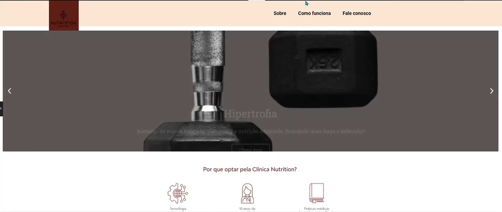

Website de Clínica – WordPress
Descrição do projeto
Este projeto consiste em um website profissional para uma clínica médica, desenvolvido com WordPress. O foco foi a construção de uma interface moderna, acessível e com excelente experiência de navegação, aplicando conceitos de UI/UX no design.
O layout valoriza a clareza de informações, acesso rápido ao agendamento e fácil localização de seções como “Sobre a clínica”, “Serviços” e “Contato”. O site é totalmente responsivo, se adaptando a celulares e tablets com fluidez.
Utilizou-se o WordPress como plataforma para permitir autonomia na manutenção de conteúdo pela equipe da clínica. Este projeto demonstra habilidade na criação de sites institucionais funcionais e alinhados com as necessidades de negócios locais.
Confira a apresentação do projeto no Drive: Clique aqui para visualizar
← Voltar ao portfolio